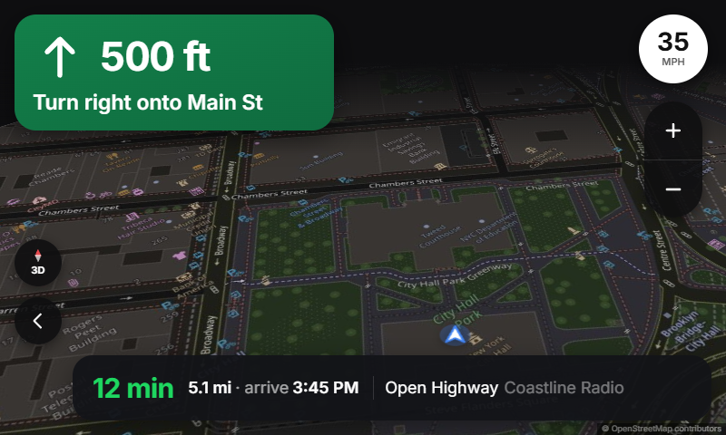
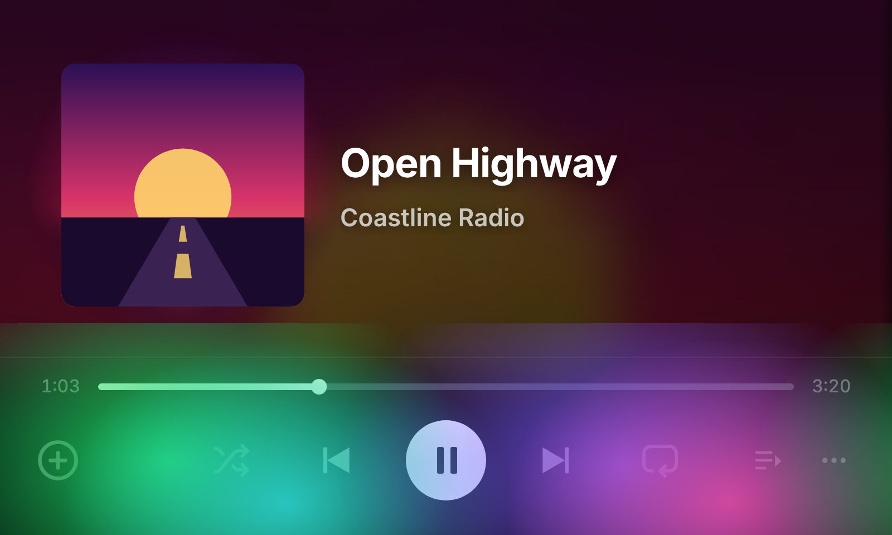
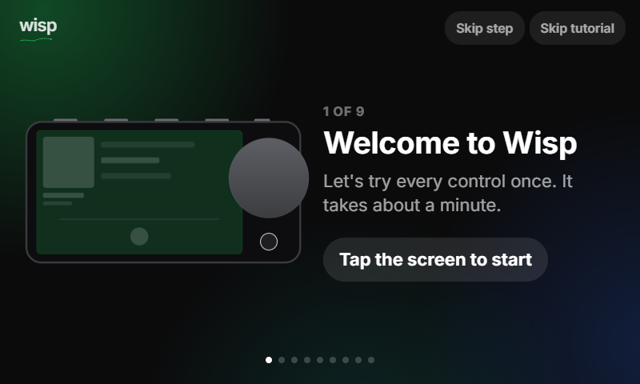
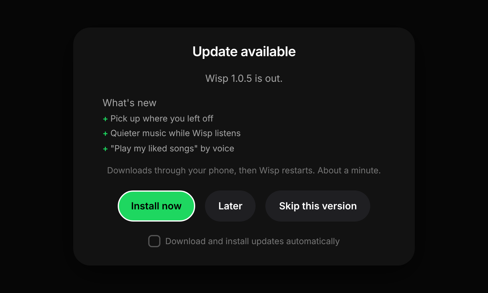

What's new · November 7, 2026
Wisp 1.1
A map that drives like Google's, every voice command on the Car Thing itself, and Wisp OS that updates as a whole system, downloading only what changed.

DirectionsA 3D map that closes in at turns
Tilted like Google Maps, zooming out at speed and in as a turn comes up. Switch to turning with the car or north up, and zoom with + and −.
How it works ›

VoiceEvery command on the Car Thing
Over 400 ways of saying things, understood with no phone. Plus shuffle, repeat, "set the volume to 40", "skip ahead 30 seconds", "open Settings", and a warning when the wind drowns you out.
What to say ›

Getting startedLearn every control in a minute
After you flash Wisp, a hands-on tutorial tries each button, the knob and the gestures with you. Run it again from Settings → Storage.
The controls ›

Wisp OSThe whole system, over the air
Wisp OS now updates as a whole system, downloading only what changed, often a few MB. It's written beside the system running and takes over at the next start.
Updates ›
Directions
- A 3D map that closes in at turns. It zooms out as you speed up and in as a turn comes up. The button on the left switches between 3D, turning with the car, and north up; + and − zoom from there. Wisp remembers both.
- The map keeps what it's shown (up to 150 MB) and fetches ahead, around you and along a shared route, so it no longer fills in slowly.
Voice
- Every command, however you say it, on the Car Thing. "I'm nodding off", "skip past the intro", "let the passengers choose": no phone needed. Of 35 wordings it had never seen, it understood 25, up from 6.
- New: "shuffle" / "stop shuffling", "put this on repeat", "set the volume to 40", "skip ahead 30 seconds", "go back 10 seconds", "open Settings" (or the map, Home, Up next, the visualizer), "play my daylist".
- Wind warnings: a small alert when wind on the mic is enough to matter, and "Too windy to hear you" instead of "didn't catch that".
Everything else
- Your phone connects by itself when the Car Thing starts.
- Bigger targets on the player's buttons, so you don't have to aim while driving.
- A smoother Home, with a quick glide as you scroll.
- Bolder visualizers: bass at the bottom, treble at the top, mirrored, and much livelier.
- Backwoods, a new Drive Mode sound.
- Wisp OS system updates: only what changed comes down, a download cut short carries on next drive, and if the new system doesn't start properly the Car Thing goes back to the one it had. (The original firmware keeps getting Wisp's own updates.)
Update the Wisp app too
Wisp app 1.1.2 (update it from inside the app) brings Backwoods and teaches the phone's model the new commands.
Every update ›